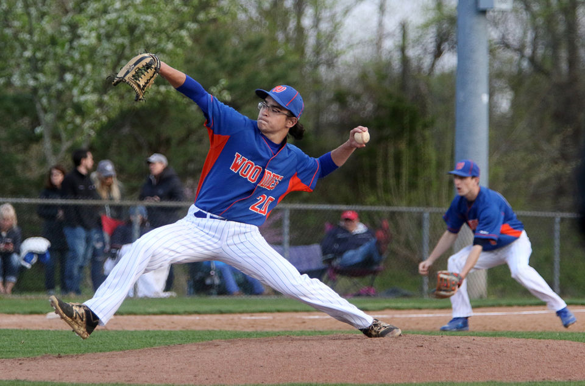
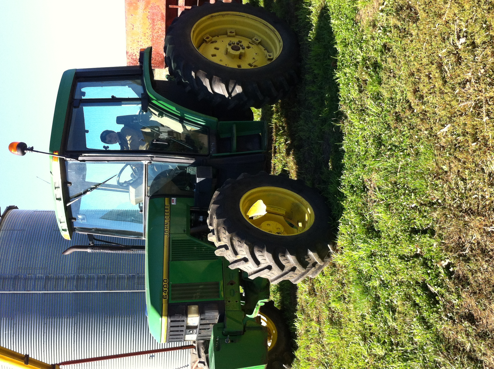
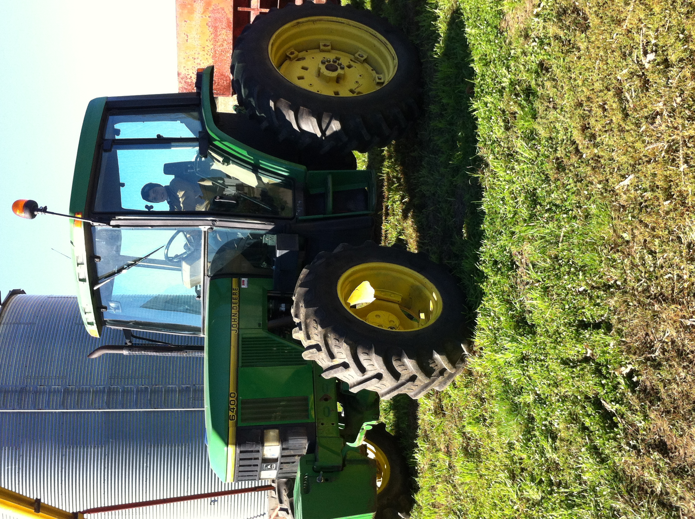
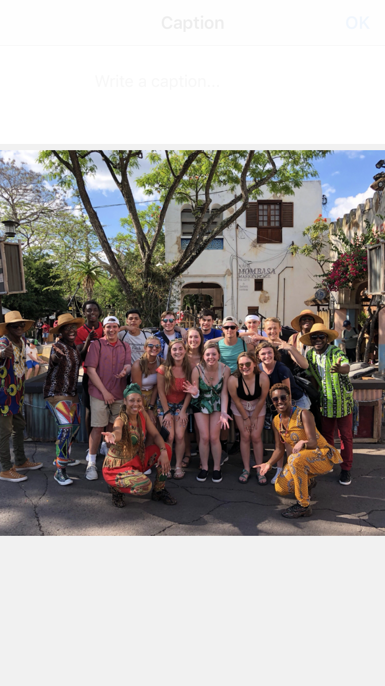
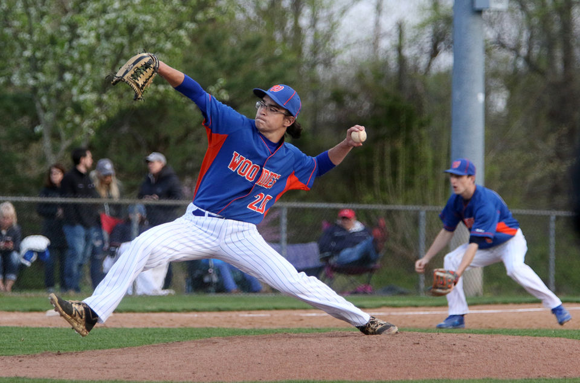
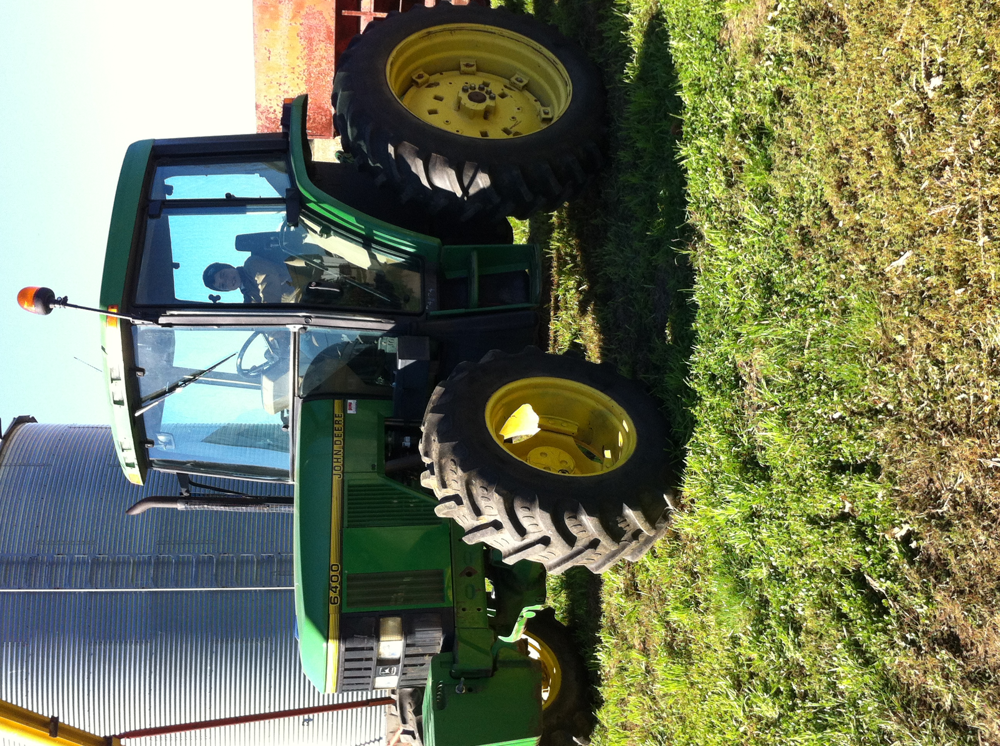
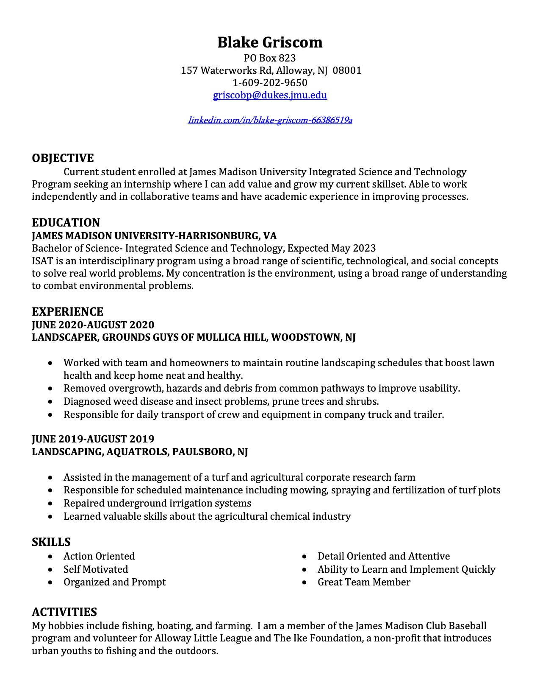
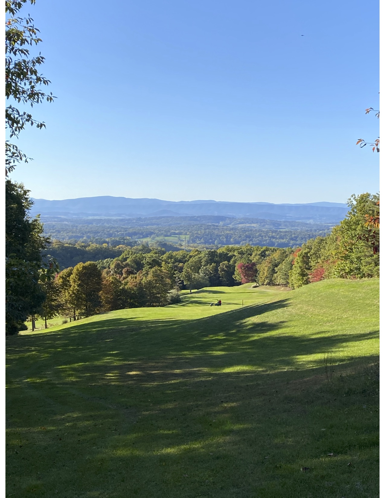

My Interests
Some of my interests include golfing, competitive shooting, investing, and how the
world works. I am most passionate about baseball, fishing, and farming with my Dad.
 

My name is Blake Griscom, I am a hard working and dedicated sophomore. I am majoring in Integrated Science and Technology (ISAT)
and my minor is Entrepreneurship at James Madison University. I am looking to get an internship, preferably in the field of agriculture
or logistics. Throughout my life I have gained experience working on my family's farm and learning how it runs.
Some of my interests include golfing, competitive shooting, investing, and how the
world works. I am most passionate about baseball, fishing, and farming with my Dad.


My past work history would include my family farm, Aquatrols Corportation of America, and The Ground Guys of Mullica Hill.
Working for Aquatrols, I gained experience managing the turf research farm, including working with my superiors to help produce
the best plots of professional grade turf in the area. While at The Ground Guys of Mullica Hill, I was responsible for driving
the compny truck and trailer, managing the crew, ensuring customer satisfaction, and building landscape designs.
Feel free to email, call, and or text me.
Phone Number: 609-202-9650
Email: griscobp@dukes.jmu.edu
LinkedIn: https://www.linkedin.com/in/blake-griscom-66386519a/
